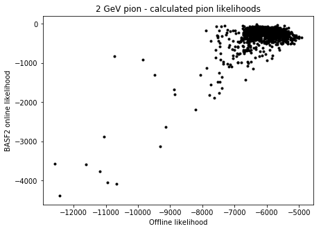
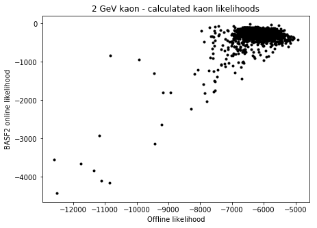
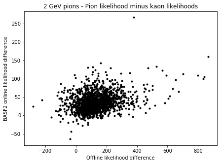

Today I got the analytic likelihoods with TTS and background implemented. I have a simulation script that runs single-particle event simulations, and extracts all the data we need to compare BASF2 analytic, offline analytic, and Monte Carlo likelihoods.
I calculate for roughly 1700 particles the analytic likelihoods and then compare them to the BASF2 likelihoods. These are the results. I'm showing a scatterplot of "online" (BASF2) likelihoods versus offline likelihoods. We hope for a rather straight line with increasing slope.
  
This is pretty bad. There is no apparent correlation between the likelihoods, as most of these points fall into a bit of a blog. We wonder, then, if there is some issue where the channel PDFs we use to calculate the analytic likelihoods are getting offset from the channels written out.
The "channel" or pixel ID that gets written out for each digit is an integer from 1 to 512 (inclusive). Our data structures that store the channel PDFs, however, are indexed 0 to 511, so to access the likelihood at a channel ch and time t, we get the value of the ch-1 channel PDF at t. As such, to see if there is just some problem with this ch-1 mapping, I tried to just omit the map and use only ch. Here is the result.
This is significantly better. It's what we had hoped to see the first time. We just don't understand why mapping the pixel IDs to what should not be their corresponding channel PDFs would improve performance. A more deep look into this coming next Tuesday.